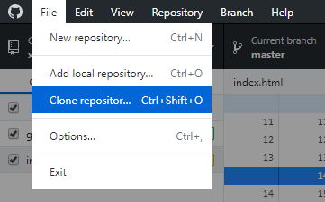
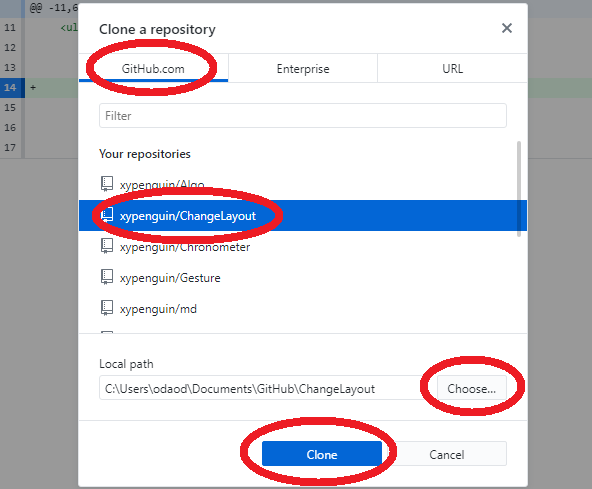

PCを新しく購入したときなど、GitHubにあるリポジトリを自分のPCに複製する作業が必要になるよね。その作業をクローンって言うよ。
まず最初に gitHubDeskTop を起動して上部のメニューバーの「File」→「Clone repositor...」をクリック。
Clone a repository というウインドウが開いたら基本最初から選択されていると思うけど「GitHub.com」のタブを選択。次に Your repositories の項目の中からクローンしたいリポジトリを選択。
次に Local path を指定するよ。自分のPCのどの場所にクローンしたいのか場所を指定するために「Choose...」をクリック。クローンする際にgithubのリポジトリ名と同じ名前のフォルダが作られるので、自分でフォルダを作っておく必要はないよ。
Local path が指定出来たら「Clone」をクリック。
これでgithubのサイトから自分のPCへクローンする作業が始まるよ。